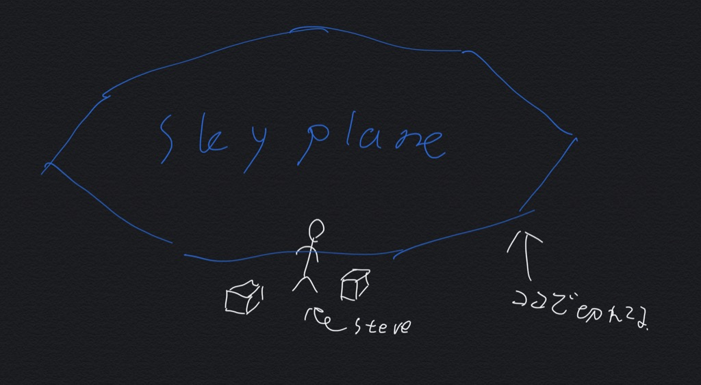

#7 空を描く(前編)
空を描く前にファイルの準備を…
index
- materialを見る
- 引き起こされる問題とその対処法
- 処理を書く前に
2020/4/18 作成
2020/4/18 更新
materialを見る
空を担当するシェダーを特定するためにmaterialを見に行きます
それっぽいところをあたっていきましょう
sky.material
{
"sun_moon":{
………
},
"stars":{
………
},
"cubemap":{
………
},
"skyplane":{
………
},
"end_sky":{
………
}
}
書くまでも無いとは思いますが一応↓
sun_moon→太陽と月
stars→星
cubemap→textures/overworld_cubemapのあれ ポリゴンの形は立方体
skyplane→空 ポリゴンの形は八角形
end_sky→エンドの空 ポリゴンの形は立方体
今回の目的にはskyplaneが一番合ってそうですね
sky.material>skyplane
"skyplane": {
"states": [ "DisableDepthWrite", "DisableAlphaWrite" ],
"vertexShader" : "shaders/sky.vertex",
"vrGeometryShader" : "shaders/sky.geometry",
"fragmentShader" : "shaders/color.fragment",
"vertexFields": [
{ "field": "Position" },
{ "field": "Color" }
],
"msaaSupport": "Both"
},
statesやvertexFieldsはopengl本体に対する指令です
webglとか触ったことある人は聞き覚えあるでしょう
msaaはアンチエイリアシング関連のものと思われますが詳細な挙動は確認して無いです
sky.vertexとcolor.fragmentをいじればいいことは分かりましたね
引き起こされる問題とその対処法
sky.vertexとcolor.fragmentをいじる前に確認すべきことがあります
感の良い方はなんとなく予想ついているでしょう
なぜcolor.fragmentなんて名前がついているのでしょう
それはmaterialsフォルダをこの名前で検索すると分かります

他の場所でも同じシェダーを使っているのです
このままの状態でcolor.fragmentをいじると予期しない場所に空が出現する原因になります
(過去にSS10shaderで起きていたバグはこれに起因するものだったり)
ので、なんらかの手段で処理を分ける必要があります
対処法はいくつかありますが
一番分かりやすい方法は新しいシェダーファイルを作って
それをmaterialで指定する方法です

今回はsky.fshという名前で作りました
中身はcolor.fragmentを同じです
materialにパスを書くときは言語名の階層を抜く必要があります
ただのjsonなので必要な部分以外は記載しなくても動きます
sky.material
{
"skyplane":{
"fragmentShader":"shaders/sky.fsh"
}
}
これで空の処理をcolor.fragmentから分離することができました
このままsky.fshをいじってもいいのですが…
処理を描く前に
コードを書く前にsky.vertexとsky.fshの中を見てみましょう
sky.vertex
(前略)
varying vec4 color;
void main()
{
gl_Position = WORLDVIEWPROJ * POSITION;
color = mix( CURRENT_COLOR, FOG_COLOR, COLOR.r );
}
sky.fsh(color.fragment)
(前略)
varying vec4 color;
void main()
{
gl_FragColor = color;
}
vertexでプログラムから渡された空の色と霧の色を混ぜて
fragmentはそれを吐いているだけになっています
(COLOR.rには天頂からの距離を表すデータが入っています)
skyplaneは最初に述べたとおり八角形をしたただの平らな板です
このままではsky.fshに処理を書いて混ぜただけでは空の端に不自然な切れ目ができてしまいます

ので、霧の処理をfshに移動します
(ちなみにrenderchunk.fragmentは元々そうなっている)
varyingでCOLOR.rとCURRENT_COLORをfshに渡します
FOG_COLORはuniformから来ているのでfsh側で直接取得できます
その他いろいろ整理したものがこちらです↓
sky.vertex
// __multiversion__
// This signals the loading code to prepend either #version 100 or #version 300 es as apropriate.
//@McbeEringi MIT_LICENSE mcbeeringi.github.io/how
#include "vertexVersionSimple.h"
uniform MAT4 WORLDVIEWPROJ;
attribute mediump vec4 POSITION;
attribute vec4 COLOR;
varying float fog;
varying POS3 pos;
void main()
{
gl_Position = WORLDVIEWPROJ * POSITION;
fog = COLOR.r;
pos = POSITION.xyz;
}
sky.fsh
// __multiversion__
// This signals the loading code to prepend either #version 100 or #version 300 es as apropriate.
//@McbeEringi MIT_LICENSE mcbeeringi.github.io/how
#include "fragmentVersionSimple.h"
uniform vec4 CURRENT_COLOR;
uniform vec4 FOG_COLOR;
varying float fog;
varying POS3 pos;
void main()
{
vec4 diffuse = CURRENT_COLOR;
//write your codes here
gl_FragColor = mix(diffuse,FOG_COLOR,fog);
}
最後の
gl_FragColor = mix(diffuse,FOG_COLOR,fog);が霧の処理になっています
今回はデフォルトのシェダーをいじりやすくするための作業しかしていないので
見た目にはほとんど変化がありません
がしかし、これはとても重要な作業なので一回分使わせていただきました
こちら
今回のサンプルです
次回からノイズを使って雲本体を描いていきます
お楽しみに